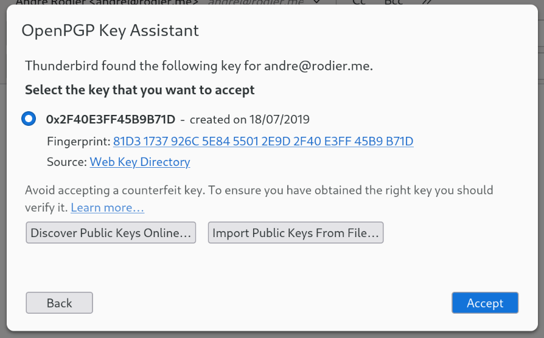

Un répertoire de clés Web (WKD) offre un moyen simple de fournir et d’obtenir la clé publique actuelle pour un adresse e-mail via HTTPS. Il s’agit donc d’une infrastructure destinée à améliorer l’expérience utilisateur pour l’échange sécuriser les e-mails et les fichiers. Étant donné que l’adresse e-mail est nécessaire pour demander une clé publique, l’utilisation d’un répertoire de clés Web préserve la clé publique. confidentialité de cette adresse. Si une clé publique est trouvée, elle peut être utilisée pour chiffrer l’adresse e-mail à droite loin.
